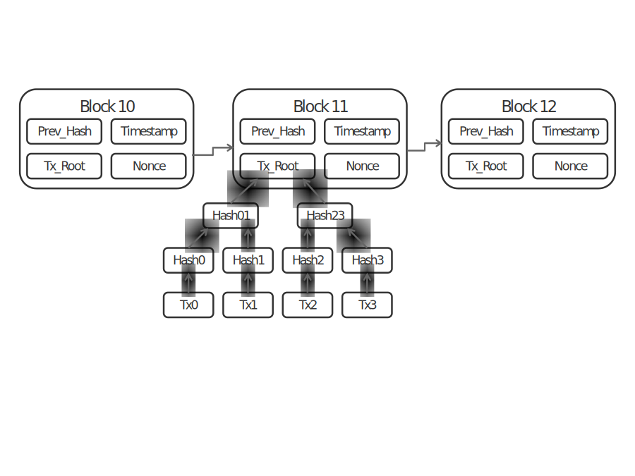
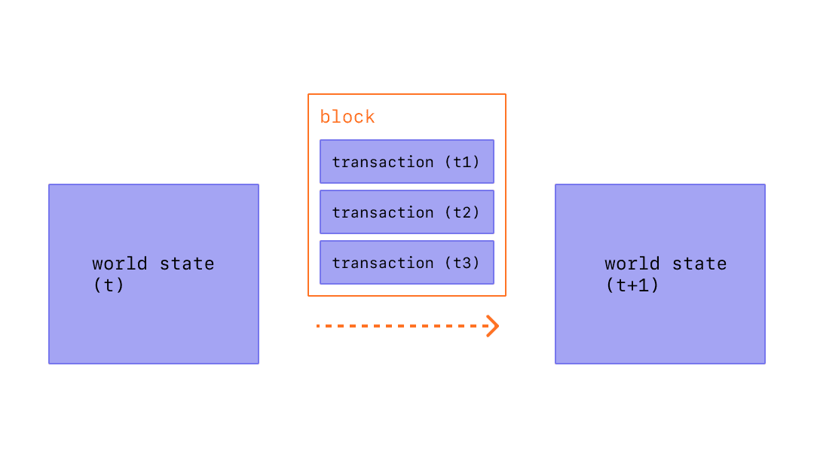
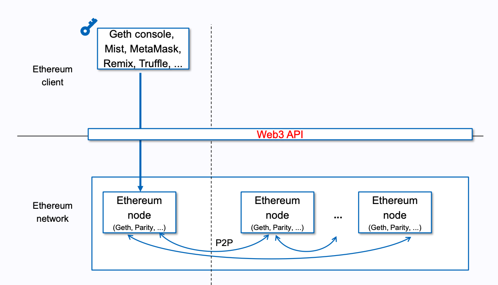
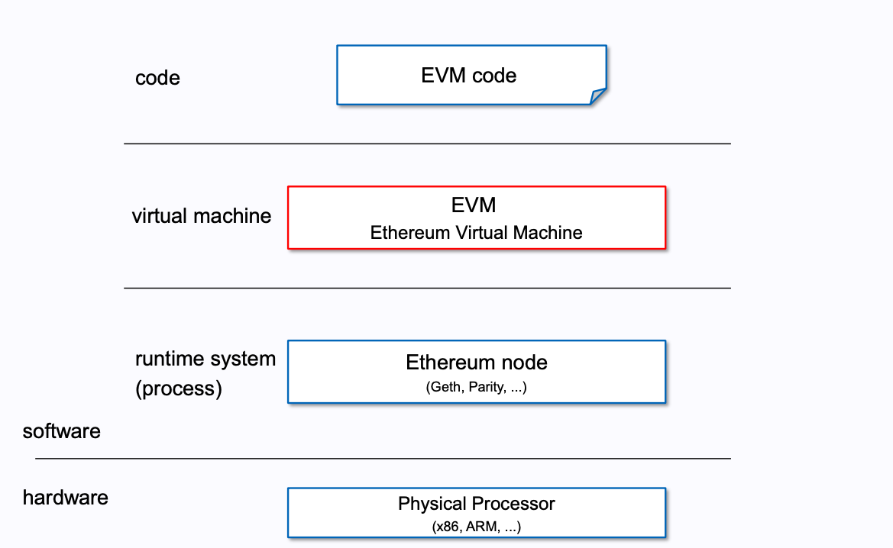
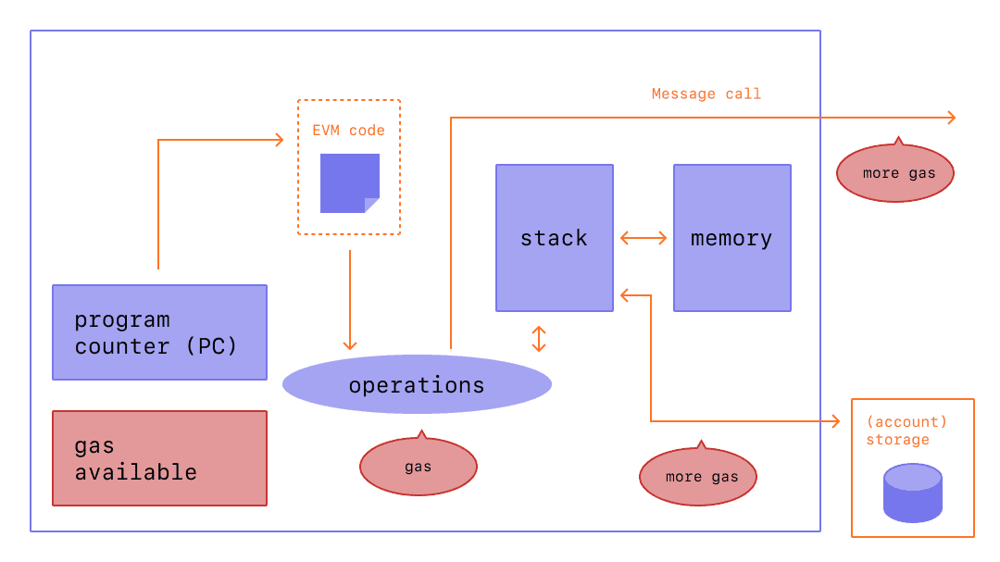
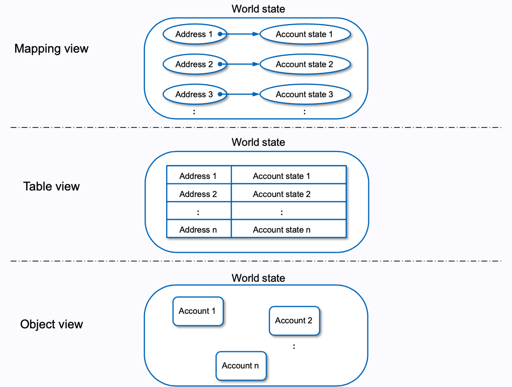
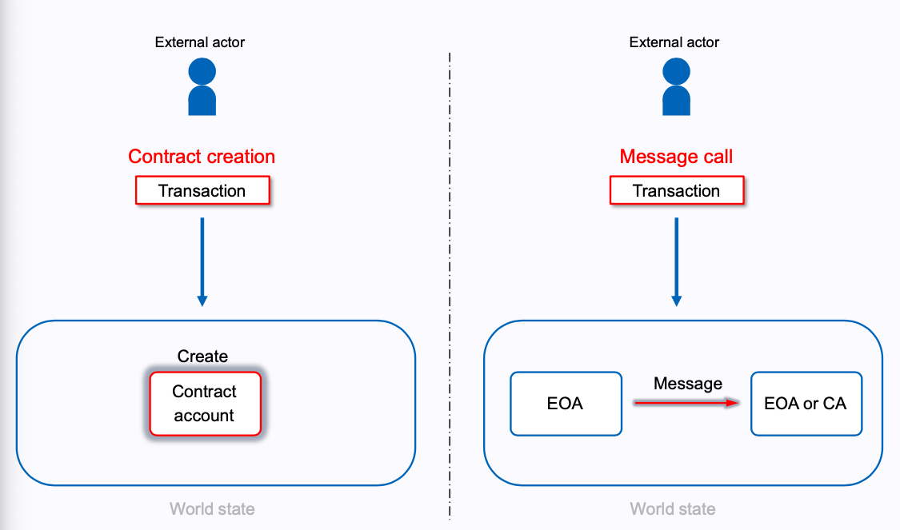
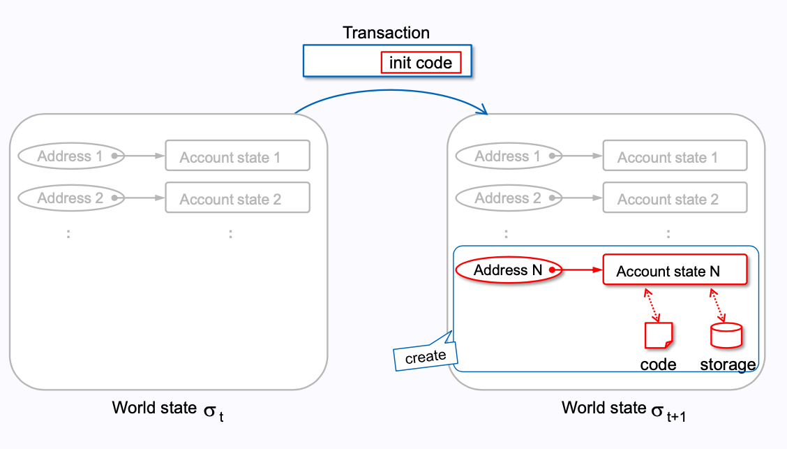
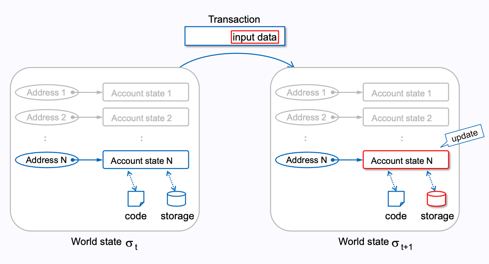

An Overview of Ethereum¶
序¶
不知不觉已经进入区块链这一行有小半年了，从最开始的 Chia，到 Swarm Bee，再到 Phala，然后是 Filcoin，最后到 Ethereum。前面的都只是在研究怎么挖，计算回本周期，最后回归到技术原理，本文试图讲解清楚 Ethereum 中的基础技术概念。
当然，这是篇技术性文章，所以会有一些技术层面知识的要求。同时，我并不是很想翻译，习惯下英文吧。对于一些基础的概念，参考 Basic Concepts
首先简单地介绍一下 BlockChain 吧。所谓的 BlockChain 呢，就是由一个个 block 的组成的链， 每个节点都会保存一份这个链的备份。而每个 block 中都包含了多个 transaction。
Overview of Block: 
Block in Ethereum: 
transaction, 中文通常叫做转账记录，但在不同的链中，对 transaction 的操作不同。所以个人还是更喜欢直接叫 transaction。
Ethereum¶
定义¶
官网对应 Ethereum 的定义是：
Ethereum is open access to digital money and data-friendly services for everyone - no matter your background or location.
这个定义介绍的是 Ethereum 的应用，并没有给出技术上的定义。
然后 Whitepaper 上关于 Ethereum 的描述就比较冗长：
The intent of Ethereum is to create an aleternative protocol for building decentralized applications, providing a different set of tradeoffs that we believe will be very useful for a large class of decentralized applications, with particular emphasis on situations where rapid developement time, security for small and rarely used applications, and the ability of different applications to very efficiently interact, are important.
这么一段长长的介绍，主要是阐述了 Ethereum 创建的目的以及功能特性，用这么长的一段话来定义 Ethereum 似乎不够简洁。
即然 Whitepaper 上没找到满意的定义，那么看看 Yellowpaper 吧：
Ethereum, taken as a whole, can be viewed as a transaction-based state machine: we begin with a genesis state and incrementally execute transactions to morph it into some current state.
欸，这里感觉有点味道了，可总觉得还是没那味。
所以这里根据参考的上面的资料，大胆的给 Ethereum 下个定义：
Ethereum is decentralised database which stores transaction-based state root hashes.
这里解释一下，其中的 decentralised database 就是区块链，区块链的本质上就是个去中心化的数据库。后面的 transaction-based state
才是 Ethereum 的核心特征。下面会介绍到什么是 transaction。
Overview¶
知道了 Ethereum 的定义，然后来看下整个以太坊的概览：

通常，技术上是将 Ethereum 代指 Ethereum network。从上图可以看出，Ethereum network 是由 Ethereum node 组成。而每个 Ethereum node 都是 EVM 和 world state 的具体实现。所以，要想了解 Ethereum，就必须了解 EVM 和 world state。那么下面开始介绍 EVM。
EVM¶
定义¶
EVM (Ethereum Virtual Machine): 定义了计算区块之间新的有效状态规则的虚拟机，是智能合约的运行环境。原文是:
EVM is what defines the rules for computing a new valid state from block to block, the runtime environment for smart contracts in Ethereum.
EVM 的架构如下：

stack: 256 bits * 1024 elements
memory: byte addressing linear memory, can be addressed at byte level, random access by stack.
storage (Account): presistent memory, 256 bits to 256 bit key-value store, random access by stack.
EVM code: bytuecode that EVM can natively exectue.
从上图可以看出，EVM 的个 stack-based 的架构，计算架构模型一般有两种，stack-based 和 register-based。其主要差别在于，register-based 的效率更高， 但其设计实现的复杂程度要高，stack-based 效率相比于 register-based 不高，但实现简单。针对物理机，更倾向于 register-based 的模型，因为物理机就是要 尽可能的高效执行，而对于 VM，都是在内存中操作，效率的差别不会很大，因此更倾向于 stack-based 的模型。 参考自：why-do-vms-need-to-be-stack-machines-or-register-machines-etc
或许有关于 memory 是 linear memory，但却被 stack random access 的疑惑，这里产生的疑惑是对 random access 的理解有误，random access 由可以叫做 direct access，可以可以直接定位到某个元素，对应的数据结构是数组，而 linear address 本来就是可以 random access 的。查看 geth 中 memory 得实现可知， memroy 就是由一个字节型的数组和一个 uint64 的整型组成的。与 random access 对立的 linear access 是如果要访问，只能从头开始慢慢查找，不能直接定位到 某个位置，与之对应的数据结构是链表。
The big picture：

注：上图中在 Software 和 hardware 的中间，漏掉了操作系统。
工作原理¶
EVM 的工作流程如下：

首先，用户将自己的智能合约编译成 EVM byte code，然后 EVM 根据 byte code 里对应的指令集，消耗一定量的 gas，在 Stack 上执行操作，期间如果需要对 storage 进行操作的话，与需要扣除一定量的 gas，同理，调用其他智能合约也需要消耗 gas。
World state¶
在介绍 world state 之前，首先要介绍 account。
account¶
Yellowpaper 上的定义：
Accounts have an intrinsic balance and transaciton count maintained as part of the Ethereum state. They also have some (possibly empty) EVM Code and a (possibly empty) Storage State associated with them.Though homogenous, it makes sense to distinguish between two practical types of account: those with empty associated EVM Code (thus the account represents an Autonomous Object). Each Account has a single Address that identifies it.
Ethereum EVM Illustrated 中的定义：
An account is a mapping between address and account state. An account is an object in the world state.
官方文档中 account 的结构如下图所示：

因此，Ethereum EVM Illustrated 中的定义更为贴切。 account 根据是否有 EVM Code 分为两种：
Externally owned account (aka. EOA): 不包含智能合约的账户，其中
storage hash和code hash字段为空Contract account：智能合约对应的账户，
code hash字段保存的是合约代码 EVM Code 的 哈希值，在 message call 时用来定位 EVM Code，storage hash字段保存的该账户所在 block 的 header 中的 Merkle tree 根节点的哈希值，该 Merkle tree 将 account 中的内容编码到 trie 中。 通俗点讲就是用来确定当前用户的最新状态是在哪个 block 中。
定义¶
A collection of accounts that is a mapping between address and account state.
这个定义是我自己定义的，因为参考的资料的定义有些模糊。 Yellowpaper 上的定义：
The world state, is a mapping between addresses ( 160-bit identifiers) and account states ( a datastructure serialised as RLP, see Appendix B).
而在 Ethereum EVM Illustrated 中 world state 和 account 的定义是完全一致的：
The world state is a mapping between address and account state.
world state 的结构如下图所示：

从图中可以清楚的看到 world state 与 account 的差别。
Transaction¶
在介绍 transaction 之前，首先要介绍 message 。
message¶
这个术语的定义比较清晰，就是：
Message is Data ( as a set of bytes) and Value (specified as Ether) that is passwd between two Accounts.
这个定义也没什么好解释的，就是说两个账户之间进行转账就叫 message。 P.S. 在 Ethereum 中，Ether 表示的就是 ETH。
定义¶
A transaction is a single cryptographically-signed instruction by External Actor.

何为 External Actor? 不在 world state 中的就叫 Extrenal Actor。就比如说你需要创建个智能合约， 你创建你需要对 node 发送创建指令并对其签名，然后你就会得到个合约账户，对于 Ethereum 来说， 你就是 External actor，而所得到的合约账户已经记录在 world state 中了，那他就不是 External Actor。 还有就是你要用一个 EOA 向另一个 EOA 转账，你是 Extrenal Actor，EOA 不是。而如果是由智能合约 触发的对 EOA 的转账，那就叫 message，而不能叫 transaction。而这，又将 transaction 分成了两种：
contract creation： 对应第一种情况，创建智能合约时的 transaction

message call：对应第二种情况，External Actor 用一个 EOA 给另一个 EOA 转账的 transaction

那 transaction 和 message 之间的关系是什么呢？其实就是每个 transaction 都至少会触发一个 message， 而每个 trasaction 都会封装到 block 中，每个 block 会保存到 Ethereum Network 中，将 block 保存到 Ethereum Network 中的这个操作通常称为上链。
至此，对于 Ethereum 里的大部分概念算是理清了。